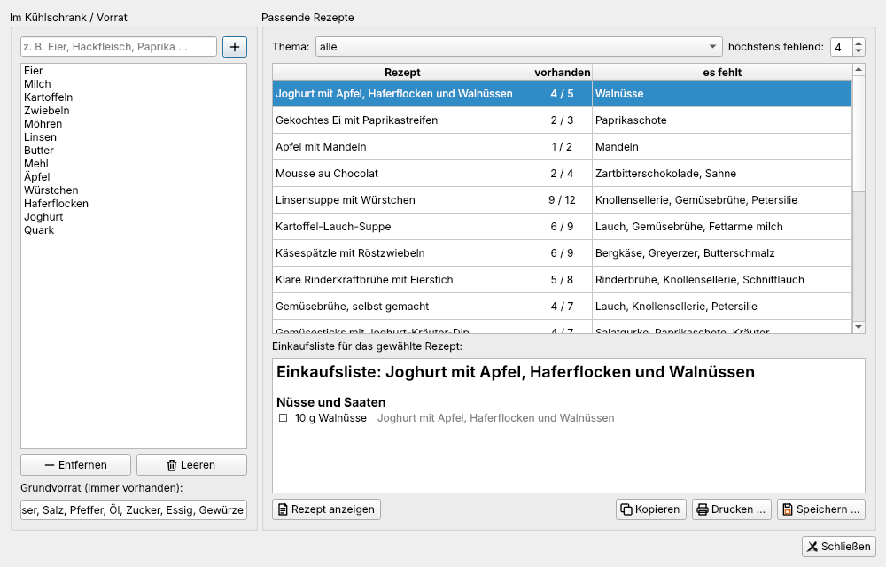
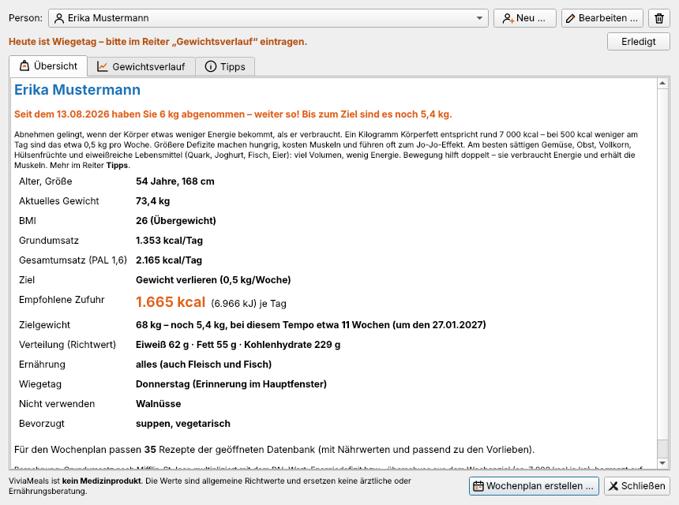
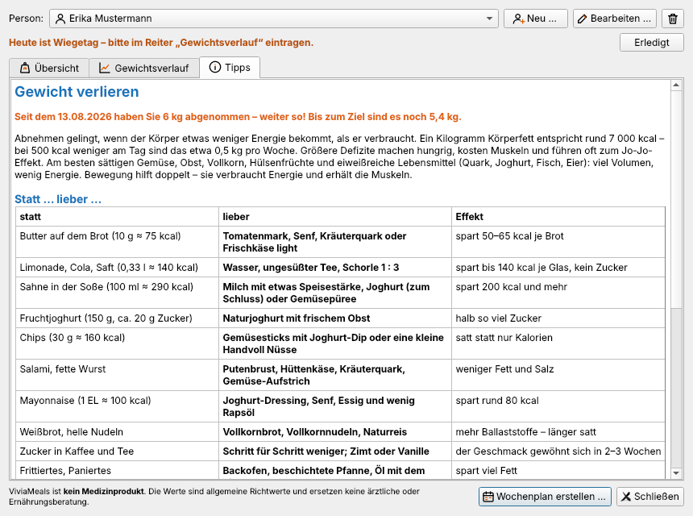
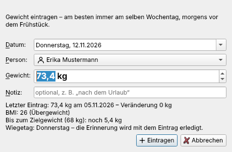
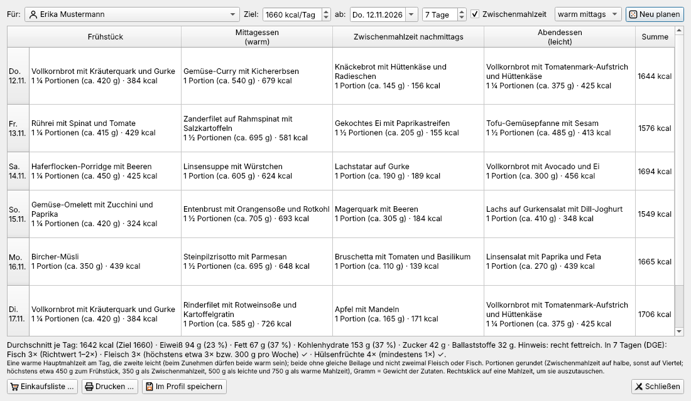
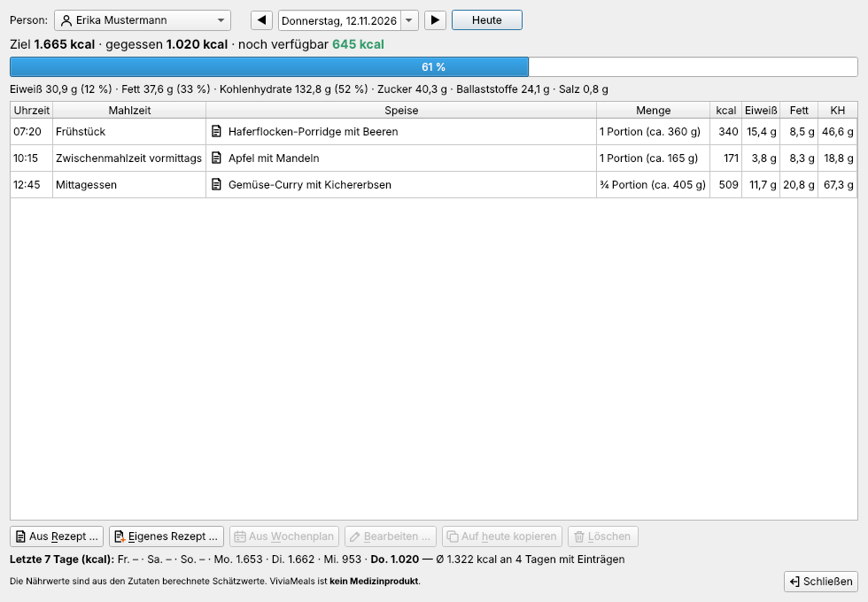
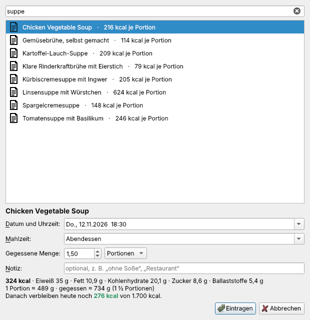

Planen und Gewichtskontrolle
Das Menü Planen hilft beim Alltag: Was lässt sich mit dem Vorhandenen kochen? Wie viel sollte ich essen, um mein Gewicht zu verändern oder zu halten? Wie sieht eine passende Woche aus?
Hinweis: Energiebedarf, Zielzufuhr und Pläne sind Schätzwerte nach allgemeinen Formeln und Empfehlungen der Deutschen Gesellschaft für Ernährung (DGE). ViviaMeals ist kein Medizinprodukt.
Kühlschrank – was koche ich heute?
Planen → Kühlschrank – was koche ich heute? … (F5)

- Unter Im Kühlschrank / Vorrat tragen Sie ein, was da ist („Eier, Hackfleisch, Paprika“) – Hinzufügen, Entfernen, Leeren.
- Der Grundvorrat enthält, was immer im Haus ist (Salz, Pfeffer, Öl, Mehl …). Er zählt stets als vorhanden.
- Passende Rezepte zeigt die Rezepte, sortiert danach, wie viel schon vorhanden ist („vorhanden 7/9“), mit den fehlenden Zutaten. Thema und höchstens fehlend schränken die Auswahl ein.
- Für das gewählte Rezept steht unten die Einkaufsliste – nach Warengruppen geordnet, zum Kopieren, Drucken oder Speichern … als Textdatei.
Bestand und Grundvorrat merkt sich ViviaMeals für das nächste Mal.
Assistent Gewichtskontrolle
Planen → Assistent Gewichtskontrolle … (F6)

Der Assistent verwaltet beliebig viele Personen, z. B. alle Mitglieder eines Haushalts. Neu … legt eine Person an, Bearbeiten … ändert ihr Profil:
| Angabe | Wozu |
|---|---|
| Name, Geschlecht, Geburtsjahr, Größe, aktuelles Gewicht | Grundumsatz und BMI |
| Aktivität (PAL) | wie bewegt der Alltag ist – von überwiegend sitzend bis körperlich schwer |
| Ziel | abnehmen, Gewicht halten oder zunehmen |
| Zielgewicht und Tempo | wie viel je Woche – empfohlen sind beim Abnehmen höchstens 0,5 kg |
| Ernährung | alles, vegetarisch oder vegan |
| Nicht verwenden | Zutaten, die nicht vorkommen sollen (z. B. Pilze, Koriander) |
| Bevorzugte Themen | Tags, die der Wochenplan bevorzugt (z. B. italienisch, suppen) |
| Wiegetag | Tag der wöchentlichen Erinnerung |
| Zwischenmahlzeit einplanen | eine Zwischenmahlzeit am Nachmittag (beim Zunehmen zusätzlich eine Spätmahlzeit) |
Die Übersicht zeigt daraus:
- BMI mit Einordnung,
- Grundumsatz (nach der Formel von Mifflin-St Jeor) und Gesamtumsatz (Grundumsatz × PAL),
- die empfohlene Zufuhr je Tag mit Verteilung auf Eiweiß, Fett und Kohlenhydrate,
- wie lange es beim gewählten Tempo bis zum Zielgewicht dauert,
- den Fortschritt seit dem ersten Eintrag („Seit dem 10.08. haben Sie 5,9 kg abgenommen – weiter so!“).
Schutzgrenzen: Beim Abnehmen plant ViviaMeals höchstens 1.000 kcal unter dem Bedarf und nie weniger als den Grundumsatz bzw. 1.200 kcal (Frauen) und 1.500 kcal (Männer). Liegt der BMI unter 18,5, wird gar keine Abnahme geplant. Beim Zunehmen kommen höchstens 700 kcal hinzu.
Der Reiter Gewichtsverlauf zeigt alle Einträge als Tabelle und Grafik. Im Reiter Tipps stehen einfache Tauschideen („statt Butter lieber Tomatenmark“) und gute Gewohnheiten nach den DGE-Empfehlungen „Gut essen und trinken“.

Gewicht eintragen und Wiegetag
Planen → Gewichtskontrolle … (F8): Datum und Person wählen, Gewicht eingeben, Eintragen. Gibt es für den Tag schon einen Eintrag, wird er ersetzt. Angezeigt werden der letzte Eintrag mit Veränderung (grün in Zielrichtung, orange dagegen), BMI und der Abstand zum Zielgewicht.

Am Wiegetag erinnert ein orangefarbener Hinweis im Hauptfenster: „Heute (Montag) ist Wiegetag für …“. Gewicht eintragen … öffnet den Dialog, Erledigt blendet die Erinnerung bis zum nächsten Wiegetag aus. Wurde der Tag verpasst, bleibt der Hinweis bis zum nächsten Eintrag stehen.
Tipp: Wiegen Sie sich immer am selben Wochentag, morgens nach dem Aufstehen und vor dem Frühstück. Tägliche Schwankungen von ein bis zwei Kilogramm sind normal und sagen wenig aus.
Wochenmenü-Plan
Planen → Wochenmenü-Plan … (F7) – oder Wochenplan erstellen … im Assistenten.

Oben wählen Sie die Person (Für), den Starttag (ab), die Zahl der Tage (1 bis 14), ob es mittags oder abends warm gibt und ob eine Zwischenmahlzeit eingeplant wird. Neu planen stellt einen Plan zusammen, der zum Kalorienziel der Person passt.
Tagesablauf je Ziel:
| Ziel | Mahlzeiten | Anteile am Tagesbedarf |
|---|---|---|
| Abnehmen | Frühstück · warm · leicht (· Zwischenmahlzeit) | 30 / 45 / 25 % (25 / 40 / 10 / 25 %) |
| Halten | Frühstück · warm · leicht (· Zwischenmahlzeit) | 30 / 40 / 30 % (25 / 35 / 10 / 30 %) |
| Zunehmen | Frühstück · Zwischenmahlzeit · Mittag · Zwischenmahlzeit · Abend (· Spätmahlzeit) | 22 / 10 / 32 / 11 / 25 % |
So wählt der Plan aus:
- Frühstück nur aus Rezepten mit dem Tag „frühstück“, die warme Mahlzeit aus Hauptgerichten, die leichte aus Rezepten mit „leichte mahlzeit“ (Salat, Suppe, Brotzeit, Quark, Omelett …), Zwischenmahlzeiten aus Snacks.
- Am selben Tag keine gleiche Beilage (Nudeln, Reis, Kartoffeln, Brot) und nicht zweimal Fleisch oder Fisch; dasselbe Rezept nicht an zwei Tagen hintereinander.
- Wochenrichtwerte nach DGE: Fisch ein- bis zweimal, Hülsenfrüchte mindestens einmal, Fleisch höchstens etwa 300 g.
- Beim Abnehmen keine Desserts; Vorrang für sättigende Rezepte mit wenig Energie je 100 g, viel Eiweiß und Ballaststoffen. Beim Zunehmen umgekehrt.
- Portionen mit Gramm-Angabe („1 ¼ Portionen (ca. 375 g)“) und sinnvollen Höchstmengen je Mahlzeit.
Unter dem Plan stehen Tagessummen, der Durchschnitt mit DGE-Hinweisen und die abgehakten Wochenrichtwerte.
Bearbeiten: Doppelklick zeigt ein Rezept; die rechte Maustaste bietet Anderes Rezept vorschlagen, Rezept auswählen … und Mahlzeit leeren. Einkaufsliste … fasst alle Zutaten zusammen – auf Wunsch ohne das, was laut Kühlschrank-Liste schon da ist. Im Profil speichern merkt sich den Plan.
Fehlen Frühstücks-, Snack- oder leichte Rezepte, bietet der Plan Gesunde Vorschläge übernehmen an: zwanzig mitgelieferte Rezepte wie Porridge mit Beeren, Linsensalat oder Pellkartoffeln mit Kräuterquark.
Ernährungstagebuch
Planen → Ernährungstagebuch … (F9) – oder mit der rechten Maustaste auf ein Rezept „Ins Ernährungstagebuch eintragen …“.

Jede Person hat ihr eigenes Tagebuch. Oben wählen Sie Person und Tag (Vortag, Folgetag, Kalender, Heute). Darunter stehen Ziel · gegessen · noch verfügbar mit Balken – orange, wenn das Ziel überschritten ist –, die Nährwerte des Tages und unten die letzten sieben Tage mit Durchschnitt.
Einträge hinzufügen:
Aus Rezept … – Rezept suchen, Datum und Uhrzeit, Mahlzeit und die tatsächlich gegessene Menge in Portionen oder Gramm. Der Dialog zeigt sofort, wie viel danach noch übrig ist.

Eigenes Rezept … – eine Speise mit Zutaten und Mengen erfassen. „In die Rezeptdatenbank übernehmen“ speichert sie zusätzlich als Rezept.
Aus Wochenplan – trägt die für den Tag geplanten Mahlzeiten mit typischen Uhrzeiten ein.
Bearbeiten … (auch Doppelklick), Auf heute kopieren (z. B. das tägliche Frühstück) und Löschen ändern vorhandene Einträge. Titel und Nährwerte werden beim Eintragen ins Tagebuch kopiert – spätere Änderungen an einem Rezept verändern alte Einträge daher nicht.